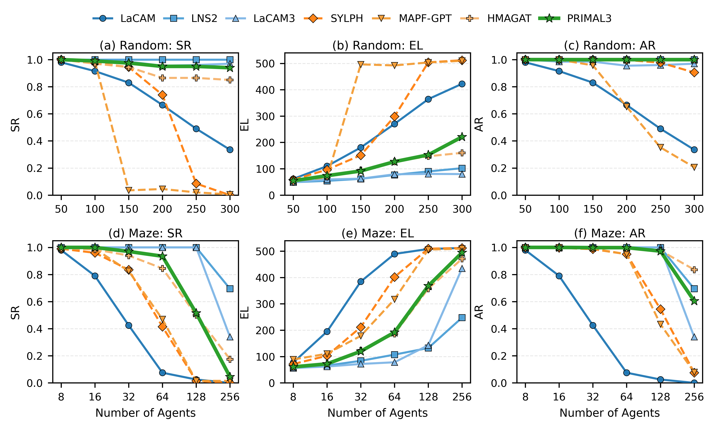
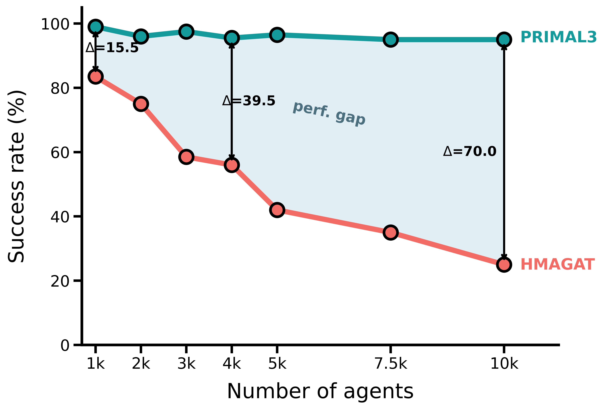
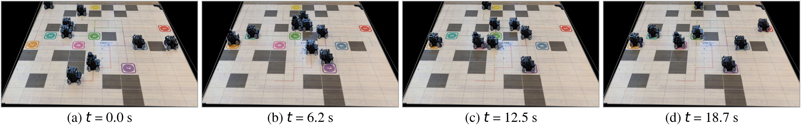
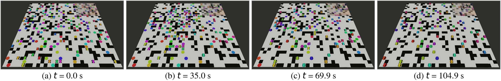

1,000
agents
Move to explore
Multi-Agent Pathfinding

We present PRIMAL3, an ultra-large-scale learning-based framework for multi-agent pathfinding (MAPF) that integrates reinforcement learning, topology-aware communication, LaCAM3-guided training, and PIBT-based action refinement. PRIMAL3 targets failures at topologically critical states, where agents must coordinate decisively around bottlenecks, dead ends, and persistent conflicts. Each agent is represented using features derived from cut vertices, dead-end regions, shortest-path distances, and blocking estimates. Two complementary graphs capture agent interactions: a same-direction following graph propagates multihop context along compatible paths, while a different-direction conflict graph differentiates agents competing for shared space through masked attention and relative features. During training, we propose to let policy entropy identify uncertain agents, for which LaCAM3 provides confidence-triggered action interventions and label-smoothed imitation targets. During execution, a priority-aware PIBT module refines the proposed joint actions using persistent, learned, and distance-aware priorities together with policy-aware fallback preferences while maintaining collision-free execution. The resulting framework combines learned exploration with structured expert guidance without requiring LaCAM3 at inference. Experiments demonstrate that PRIMAL3 substantially outperforms state-of-the-art learning-based baselines and scales to ultra-large instances with up to city-level 100,000 agents. Real-world experiments further demonstrate the feasibility of deploying PRIMAL3 on physical robotic systems and ablation studies validate the individual contributions the components we proposed.

PRIMAL3 achieves success rates comparable to those of state-of-the-art search-based solvers, including LNS2 and LaCAM3, substantially narrowing the long-standing performance gap between learning-based and classical MAPF methods.

In large-scale experiments, PRIMAL3 maintains a high success rate as the number of agents increases, while HMAGAT degrades rapidly at larger scales.
From 1,000 to 100,000 agents
Physical & mixed reality
8 physical robots performing MAPF on a 10 × 10 random map.

Mixed-reality experiment with 8 physical robots and 92 virtual agents on a 32 × 32 random map.

Code, paper, team, and citation materials are collected here.
Select and copy the citation below.
@article{he2026primal3,
title={PRIMAL3: Pathfinding via Reinforcement and Imitation \\ Multi-Agent Learning - Leveraging LaCAM3},
author={He, Chengyang and Duhan, Tanishq and Camps, Gadiel Sznaier and Wang, Fangyuan and Cao, Yuhong and Sun, Jiankai and Sun, Ge and Schwager, Mac and Sartoretti, Guillaume},
journal={arXiv preprint arXiv:XXXX.XXXXX},
year={2026}
}For questions about PRIMAL3, please feel free to contact Chengyang He at chengyanghe@u.nus.edu or hecy@stanford.edu.